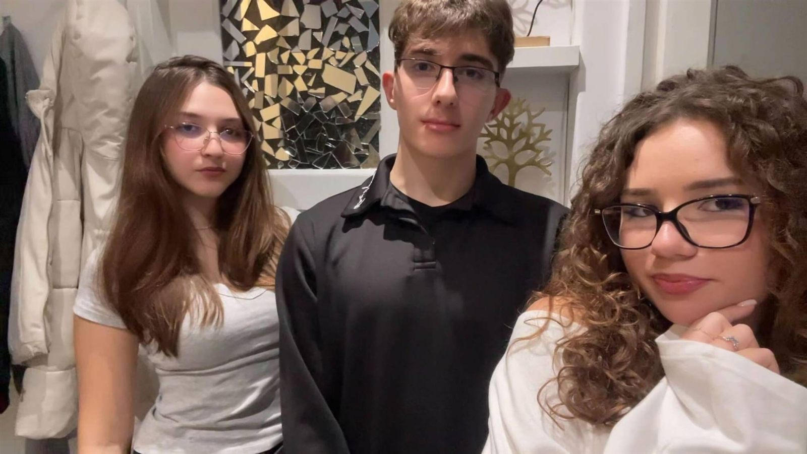

AROword
ROflight
Paste a text in Aromanian or Romani. Zbor · Lav explains it word by word and flags the words Romanians usually get wrong.
Aromanian, Romani or plain Romanian? It tells them apart as you type.
Each word gets a card with its likely Romanian meaning and how sure the model is.
Words that look Romanian but mean something else get a red TRAP stamp.
Phrases like Tu san shukar get their meaning checked against public sources.
AROword
ROflight
ROMgood, fine (mišto)
ROslang borrowed from Romani
AROthank you
ROno such word, from Greek
Small things that give each language away.
Found automatically: short words both dictionaries know well but translate differently. Guess the language wrong and you get the wrong meaning.
“What are you doing?” in Romani and in Aromanian. Not the same language.
Aromanian spelling: ã, sh, ts, dz, lj, nj, as in shi, tsi, dzua, muljari.
Romani sounds: kh, ph, th and endings like -esko or -imos, as in khere, phral, mishtimos.
Manele and Roma songs carry Romani words into every Romanian playlist. Tap one to see what Lav makes of it.
Tested on sentences and words the models never saw while learning, against guessing a word by its spelling, the way a Romanian reader does.
We built Zbor · Lav for the Veritas AI International High School Hackathon 2026, in the AI + Languages track.

Although we all come from Romania, our accents, regional expressions and everyday experiences differ. We bring those different perspectives together in a project that explores the linguistic diversity within our own country.
Problem identification, linguistic research, regional language differences, project planning and defining the platform’s direction.
SuceavaAI integration, translation logic, Python development, website architecture and technical implementation.
ConstanțaVocabulary collection, translation research, language data organisation, linguistic examples and content structuring.
SuceavaFive steps, every number tested against a simple baseline on data the model never saw.
65,708 Romanian–Aromanian sentence pairs (University of Bucharest corpus) and 1,474 folk-tale pairs. For Romani: 7,900 Kalderash Bible verses (OPUS) plus 7,157 Chergash verses paired with a modern Romanian Bible, for training only. Each set is split into training, tuning and test parts; the tests were used once.
IBM Model 1, a classic word-alignment method: if a word keeps appearing in sentences whose Romanian translation contains a certain word, they probably mean the same thing.
Zbor converts between the two Aromanian spelling systems and borrows the meaning of the most similar known word. Romani has no single spelling (so keres, socares), so Lav compares a simplified “skeleton” of the spelling.
A small character n-gram classifier (naive Bayes) trained on Aromanian, Romani and Romanian text.
A guess counts if the Romanian word appears in the correct translation, each word matched only once. The baseline, “looks like Romanian”, picks the Romanian word spelled most alike, as a reader does in their head.
AroTranslate was trained on a larger version of the same corpus, so these numbers are too optimistic.
Everything we built on, with its licence. We did not change any of the texts we used.